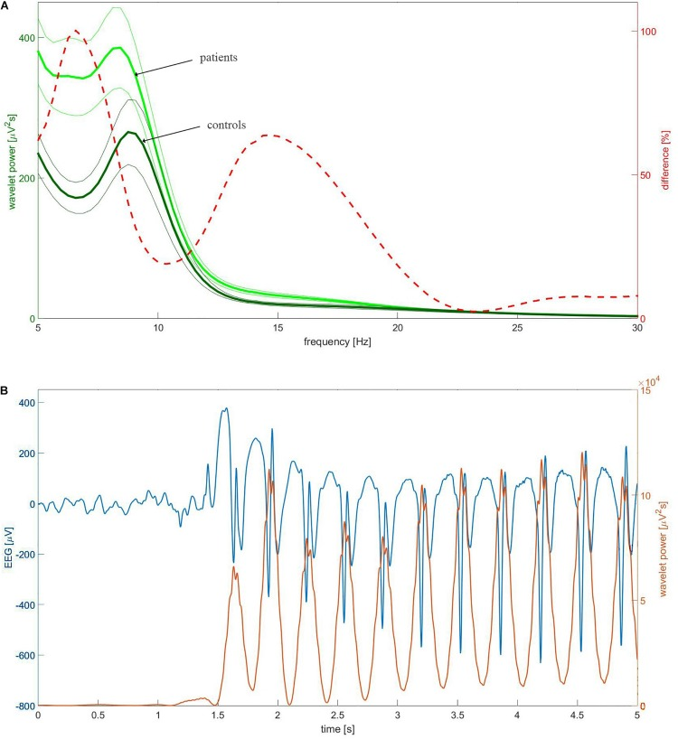

Meta + checklist · Pág. 20 de 20
Banco II — ausência, TCG adulto, DDx e fronteiras do eixo
A última página fecha o primeiro bloco da epilepsia: conceitos → síndromes → questões. Aqui voltam a ausência, a primeira crise do adulto e o diagnóstico diferencial de porta — e as duas fronteiras que não são desta aula.
Caso · menina de 8 anos
Desligamentos várias vezes/dia na escola; olhar fixo 10–15 s; retoma como se nada; sem queda, abalos ou confusão pós; DNPM normal; EN normal.
Dx: ausência infantil / pequeno mal · 1ª escolha: etosuximida
Caso · mulher de 45 anos
Perda abrupta de consciência, rigidez e movimentos tônico-clônicos ~1 min; sonolenta ~30 min; ECG, glicemia, PA e FC normais (glicemia 102).
Crise epiléptica → EEG + neuroimagem
Caso ausência + ETX
Menina de 8 anos: desligamentos várias vezes/dia na escola; olhar fixo 10–15 s; retoma como se nada; sem queda, abalos ou confusão pós; DNPM normal; EN normal. Dx: ausência infantil / pequeno mal. 1ª escolha entre opções: etosuximida.
TCG adulto → investigar
Mulher de 45 anos sem comorbidades: perda abrupta de consciência, rigidez e movimentos tônico-clônicos ~1 min; sonolenta ~30 min; ECG, glicemia, PA e FC normais. Hipoglicemia descartada (ex.: glicemia 102).
Conduta/hipótese correta no discurso: crise epiléptica → investigação neurológica com EEG e neuroimagem (adulto).
- AVC isquêmico + trombólise: sem déficit residual e sem fatores de risco no caso — não.
- Síncope cardiogênica + marcapasso: ritmo/FC normais; a síncope recobra rápido, sem pós-ictal longo típico.
Síncope × psicogênica
Regra de ouro: a crise psicogênica é um DDx importante, mas de exclusão; com padrão clássico de TCG, não se aposta nela primeiro.
Tabela · TCG × síncope × psicogênica
| TCG | Síncope | Psicogênica | |
|---|---|---|---|
| Início | abrupto neurológico | prodromos / cardíaco variável | variável |
| Motor | tônico-clônico | pode ter abalos breves | pode mimetizar |
| Pós | pós-ictal prolongado | recuperação rápida | variável |
| Status | diagnóstico de trabalho se clássico | FC / ECG | exclusão |
Fronteiras status e febril
Fecha-se o primeiro bloco da epilepsia (conceitos → síndromes → questões).
Fronteira status: o próximo bloco do eixo é o estado de mal epiléptico / lidar com a crise na frente — tempos 5/30, vias de benzo, fenitoína, refratário, exceções (dono: plataforma de status).
Fronteira febril: o eixo febril completo permanece no satélite pediátrico.
Fronteira · status (manejo em curso) Fronteira · crise febril (satélite pediátrico)
Objetos que ficam no eixo
Os objetos que nascem nesta espinha e persistem na plataforma:
def-epilepsia-3vias etiologia-por-idade inicio-classifica tabelao-aed-por-crise febril-não-é-epilepsia
Objeto que não nasce aqui: tempos-status-5-30 (dono do bloco de status). A espinha conceitual fecha aqui; status e febril têm donos próprios no eixo.

Resumo operacional
Fecha a espinha conceitual; status e febril têm donos próprios no eixo.
Quiz
Fechamento
A espinha da epilepsia termina aqui: do desligar do João ao DDx de porta. As fronteiras — manejo da crise em curso e crise febril — têm donos próprios no eixo.